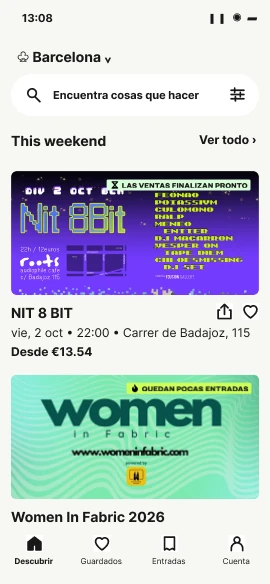
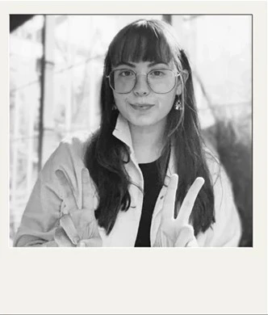
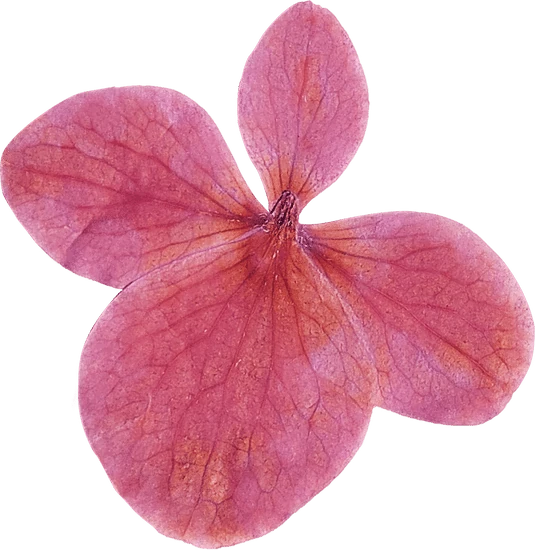

UX/UI / Academic projectUOC / 2026
Eventbrite app prototype
An Eventbrite-inspired app prototype: explore events, filter the list, view details and save favourites.
Digital content / UX/UI / Narrative
I’m Lucía Puga, a digital content creator and UX/UI master’s student in Barcelona. My work brings together content, interfaces and interactive storytelling.


A selection of my work
Academic projects, professional content work and things I’ve made with a team.

An Eventbrite-inspired app prototype: explore events, filter the list, view details and save favourites.

Interface design, implementation and production for a cozy exploration game.

A study of the print, web and app experience, including an article-screen wireframe in Figma.
Social content planning, copywriting, audiovisual editing and website updates.

A screenplay about Yago and a creature made from discarded marine life and forgotten objects.

UI/UX design, interface implementation and gameplay programming in a 48-hour project.
A background that connects
I studied Dramaturgy before moving into game development. I’ve since worked in social media, radio production and QA at Digital Legends Entertainment, part of Activision.
Now I’m studying Interaction Design and User Experience at UOC, bringing that mix of writing, production and technical experience into digital design.
My experience & educationHow I work
Social media content, copywriting, audiovisual editing and production support, with practical use of AI-assisted creative tools.
Photoshop / Adobe Creative Suite / Generative AI / CMS
UX/UI studies, Figma wireframes and interactive prototypes, supported by experience in interface implementation and quality testing.
Figma / UI prototyping / Jira / GetBuild
A technical foundation in frontend and game development helps me connect design decisions with implementation.
HTML & CSS / JavaScript / React / Unity / C#
I’m based in Gavà, Barcelona. Let’s get in touch.